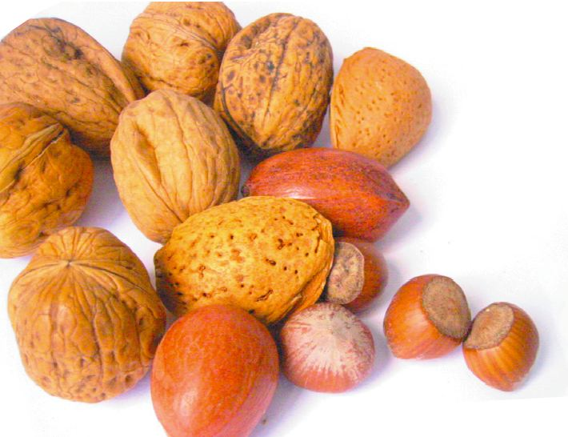

Don't Eat Me
Food allergies are more common than you think
Felix Wong
Spring 2005

Imagine a life without being able to savor peanut M&Ms, spicy Thai
food, or even a tasty tuna sandwich. As delicious as these foods may
be, there are some unfortunate individuals who are unable to relish
them without risking an anaphylactic episode, or even death. Allergies
to these common foods affect about two percent of adults and six to
eight percent of children in the United States.
A food allergy is an abnormal response by the immune
system to a particular food. Individuals with food allergies produce
large amounts of antibodies specific to a certain type of food upon
exposure. These antibodies then bind to the surface of mast cells of
the immune system and trigger the release of histamine, causing the
symptoms of an allergic reaction. Food allergens can pass through the
gastrointestinal lining into the bloodstream and travel through the
body to affect various organs and systems. A reaction might include
itchiness of the skin, abdominal pain, asthma, or a decrease in blood
pressure. Severe combinations of these symptoms result in anaphylactic
shock, a serious medical emergency that can lead to death.
Approximately 30,000 anaphylactic episodes and 150
deaths related to food allergies still occur every year. There are
medications that can reduce the symptoms of allergic reactions, but
there are no known cures for food allergies. The only preventative
measure known is strict avoidance of the food that causes the allergy.
Manufacturers are required by law to have warnings on their prepackaged
and processed food products if there is a chance that they may contain
allergenic ingredients.
Currently, it is unclear how adult onset food
allergies are developed or why children have the ability to outgrow
some food allergies. Studies must be done to explore the mechanism in
which food tolerance is lost and gained in order to develop an
effective treatment. With a better understanding of how the food
allergens induce an immune response in certain individuals, scientists
can one day help individuals enjoy the foods they love.